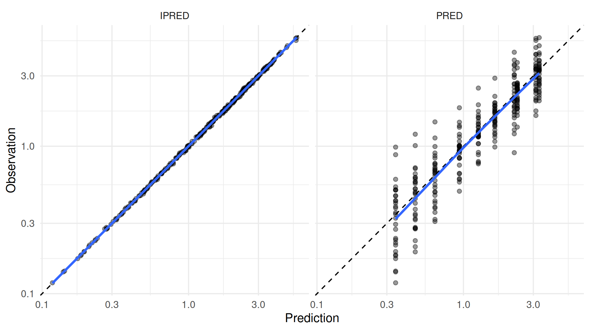
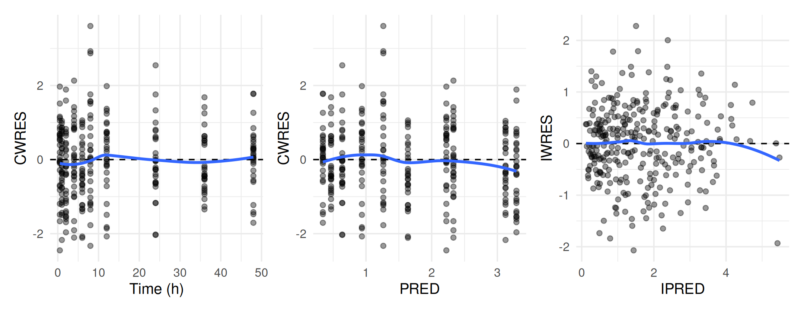
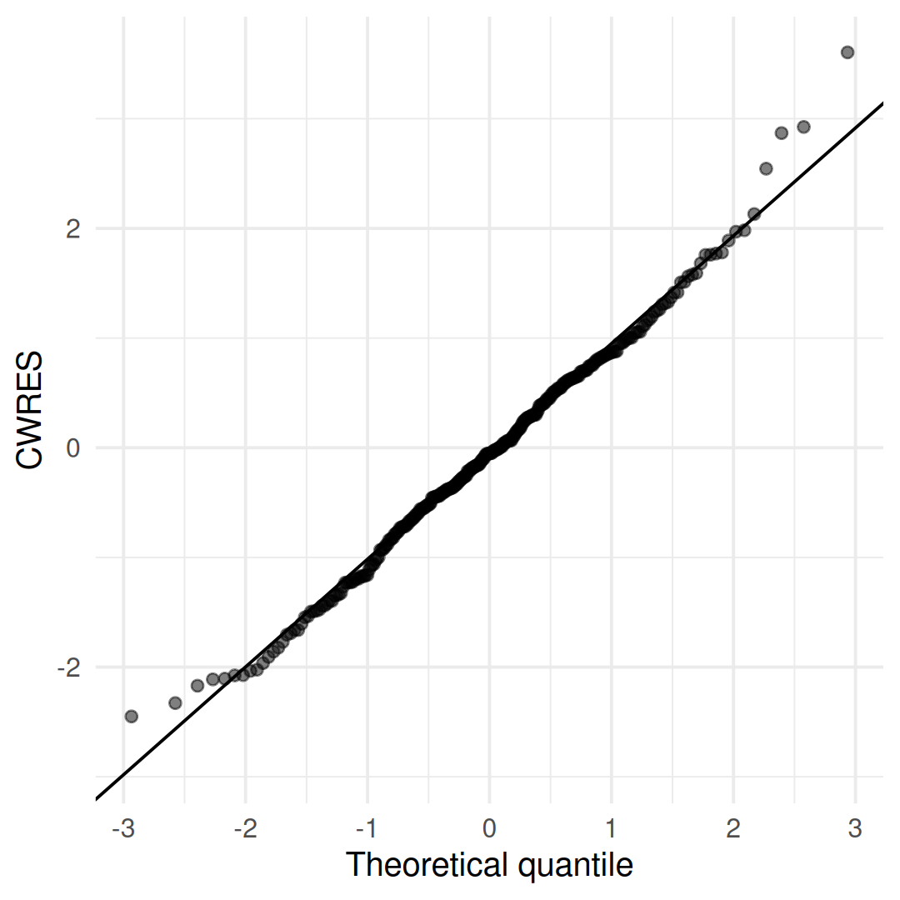
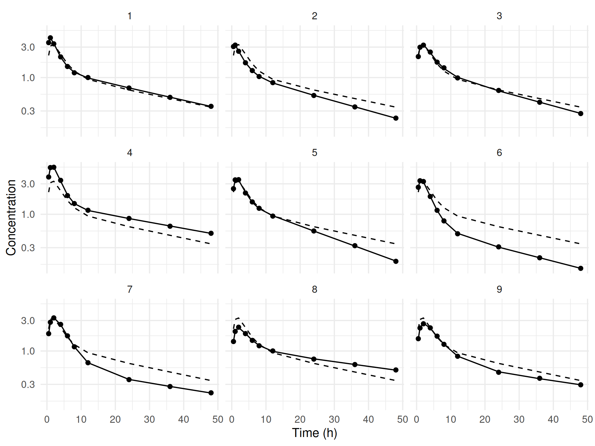
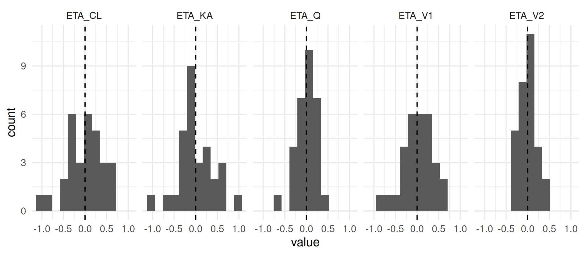
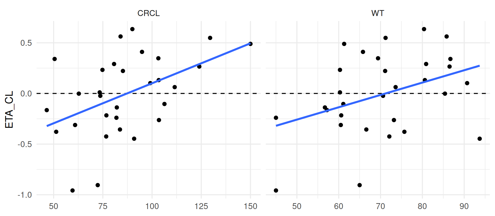
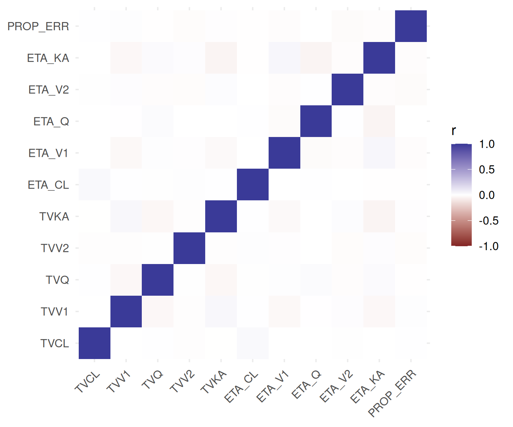
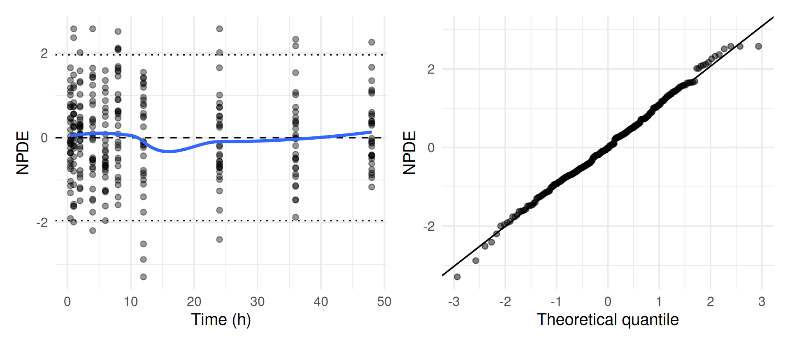

DATA → MODEL → ESTIMATE ⇄ EVALUATE → SIMULATE → REPORT
Diagnosing the model
Where you are
A converged fit with a sensible OFV is only a candidate. Before trusting it, check whether the model describes the data: are predictions unbiased, are residuals structureless, are the random effects well behaved and informed by the data, and are the parameters identifiable? This chapter works through these checks for the base model. It uses the fit object’s tables and plain ggplot2, plus the simulation-based NPDE.
The data
base <- ferx_example("two_cpt_oral_base")
fit <- ferx_fit(base$model, base$data, verbose = FALSE)Minimal runnable call
Most diagnostics come straight from fit$sdtab, which has one row per observation:
head(fit$sdtab)
#> ID TIME DV PRED IPRED CWRES IWRES EBE_OFV N_OBS TAFD
#> 1 1 0.5 3.5262 2.223319 3.538980 0.8812067 -0.1840541 -40.00822 10 0.5
#> 2 1 1.0 4.1950 3.124361 4.134356 0.9840705 0.7476190 -40.00822 10 1.0
#> 3 1 2.0 3.3759 3.290091 3.438487 -1.5465219 -0.9277259 -40.00822 10 2.0
#> 4 1 4.0 2.1090 2.331357 2.085948 0.1373079 0.5632588 -40.00822 10 4.0
#> 5 1 6.0 1.4915 1.638392 1.485297 0.1491897 0.2128522 -40.00822 10 6.0
#> 6 1 8.0 1.1890 1.263978 1.212727 -0.8405074 -0.9972035 -40.00822 10 8.0
#> TAD
#> 1 0.5
#> 2 1.0
#> 3 2.0
#> 4 4.0
#> 5 6.0
#> 6 8.0PRED is the population prediction (all etas zero). IPRED is the individual prediction at the subject’s estimated random effects. CWRES and IWRES are the conditional weighted and individual weighted residuals. TAFD and TAD are time after first dose and time after dose.
Reading the result
Observations against predictions
fit$sdtab |>
tidyr::pivot_longer(c(PRED, IPRED), names_to = "prediction", values_to = "value") |>
ggplot(aes(value, DV)) +
geom_abline(linetype = "dashed") +
geom_point(alpha = 0.4) +
geom_smooth(se = FALSE, method = "loess", formula = y ~ x) +
scale_x_log10() + scale_y_log10() +
facet_wrap(~prediction) +
labs(x = "Prediction", y = "Observation")
Points should scatter around the identity line, and the smooth should follow it. Scatter around PRED also includes between-subject variability, so it is wider than around IPRED.
Residuals
library(patchwork)
res_plot <- function(x, y, xlab) {
ggplot(fit$sdtab, aes({{ x }}, {{ y }})) +
geom_hline(yintercept = 0, linetype = "dashed") +
geom_point(alpha = 0.4) +
geom_smooth(se = FALSE, method = "loess", formula = y ~ x) +
labs(x = xlab)
}
res_plot(TIME, CWRES, "Time (h)") + res_plot(PRED, CWRES, "PRED") + res_plot(IPRED, IWRES, "IPRED")
Residuals should be centred on zero with no trend over time or predictions. Most should fall within ±2, and the spread should not change with the prediction. Under a correct model CWRES are roughly standard normal:
ggplot(fit$sdtab, aes(sample = CWRES)) +
stat_qq(alpha = 0.5) +
stat_qq_line() +
labs(x = "Theoretical quantile", y = "CWRES")
The fit also tests the residuals for serial correlation within subjects. fit$dw_statistic is the Durbin-Watson statistic of the individual residuals (2.91 here) and fit$iwres_lag1_r their lag-1 correlation (-0.53). Values far from 2 and 0 respectively trigger the dw_autocorrelation warning this fit carries. The statistic reads in two directions, and they mean opposite things:
dw_statistic |
Reading | Usually points at |
|---|---|---|
| below 1.5 | Positive autocorrelation | Missing dynamics: a delay the model does not have, an absorption phase too simple, variability between occasions |
| 1.5 to 2.5 | No serial correlation worth acting on | – |
| above 2.5 | Negative autocorrelation | Over-parameterisation, or a residual error model that does not fit the data |
ferx_get_warnings(fit)
#> ferx fit warnings (two_cpt_oral_base)
#> -------------------------------------------------
#> [WARNING] dw_autocorrelation
#> Negative IWRES autocorrelation detected (Durbin-Watson = 2.91).
#> Possible over-parameterization or misspecified error model.
#> Negative IWRES autocorrelation suggests over-parameterisation or a
#> misspecified error model. Consider removing a parameter or
#> simplifying the residual model.
#>
#> -------------------------------------------------
#> 0 CRITICAL 1 WARNING 0 INFOferx suggests over-parameterisation or a misspecified residual error model as possible causes. Model development and selection tests alternative residual error models systematically with ferx_ruvsearch().
Individual fits

These lines connect predictions at the observation times only. For smooth curves between samples, predict on a dense time grid with ferx_predict() (Simulating scenarios).
Random effects and shrinkage
fit$ebe_etas holds each subject’s estimated random effects:
fit$ebe_etas |>
tidyr::pivot_longer(-ID, names_to = "eta") |>
ggplot(aes(value)) +
geom_histogram(bins = 12) +
geom_vline(xintercept = 0, linetype = "dashed") +
facet_wrap(~eta, nrow = 1)
Shrinkage measures how strongly the individual estimates are pulled towards zero. High eta shrinkage means the data carry little information about that random effect for individual subjects, which makes eta-based plots (including the covariate plots below) unreliable for that parameter:
data.frame(eta = fit$eta_names, shrinkage_pct = round(100 * fit$shrinkage_eta, 1))
#> eta shrinkage_pct
#> 1 ETA_CL -0.2
#> 2 ETA_V1 3.6
#> 3 ETA_Q 2.9
#> 4 ETA_V2 2.4
#> 5 ETA_KA 4.2
c(eps_shrinkage_pct = round(100 * fit$shrinkage_eps, 1))
#> eps_shrinkage_pct
#> 27.9fit$eta_normality holds a Shapiro-Wilk test per eta. A flag marks p < 0.05:
fit$eta_normality
#> eta W p_val flag
#> 1 ETA_CL 0.964 0.3878
#> 2 ETA_V1 0.975 0.6775
#> 3 ETA_Q 0.986 0.9534
#> 4 ETA_V2 0.977 0.7454
#> 5 ETA_KA 0.978 0.7739Random effects and covariates
fit$eta_cov correlates each eta with each subject-level numeric covariate in the dataset, sorted by descending |r|, and marks the pairs worth following up in its flag column at |r| >= 0.3. It is a quick first look for covariate relationships, and it is NULL when the model declares no etas, the dataset carries no usable numeric covariate, or the data file can no longer be read from fit$data_path:
fit$eta_cov
#> eta covariate r p_val flag
#> 1 ETA_CL CRCL 0.469 0.0090 [!]
#> 2 ETA_CL WT 0.382 0.0371 [!]
#> 3 ETA_V1 WT 0.305 0.1010 [!]
#> 4 ETA_KA WT 0.133 0.4821
#> 5 ETA_Q WT 0.117 0.5388
#> 6 ETA_V2 CRCL 0.086 0.6503
#> 7 ETA_V2 WT 0.081 0.6688
#> 8 ETA_V1 CRCL 0.062 0.7463
#> 9 ETA_Q CRCL 0.045 0.8136
#> 10 ETA_KA CRCL -0.002 0.9899
with(fit$eta_cov, range(abs(r)[nzchar(trimws(flag))]))
#> [1] 0.305 0.469subjects <- read.csv(base$data, na.strings = ".") |> distinct(ID, WT, CRCL)
fit$ebe_etas |>
mutate(ID = as.integer(ID)) |>
left_join(subjects, by = "ID") |>
tidyr::pivot_longer(c(WT, CRCL), names_to = "covariate", values_to = "value") |>
ggplot(aes(value, ETA_CL)) +
geom_hline(yintercept = 0, linetype = "dashed") +
geom_point() +
geom_smooth(method = "lm", formula = y ~ x, se = FALSE) +
facet_wrap(~covariate, scales = "free_x") +
labs(x = NULL)
ETA_CL has the strongest correlations here, with CRCL (r = 0.469) and WT (r = 0.382). That motivates the covariate search in Model development and selection. Covariate modeling covers covariate screening tools in more detail.
Parameter identifiability
The covariance step yields the parameter correlation matrix. Correlations near ±1 point to parameters the data cannot separate:
as.data.frame(as.table(fit$cor_matrix)) |>
ggplot(aes(Var1, Var2, fill = Freq)) +
geom_tile() +
scale_fill_gradient2(limits = c(-1, 1)) +
labs(x = NULL, y = NULL, fill = "r") +
theme(axis.text.x = element_text(angle = 45, hjust = 1))
c(max_abs_correlation = fit$max_abs_correlation, condition_number = fit$condition_number)
#> max_abs_correlation condition_number
#> 0.05013899 1.23482058The condition number is the ratio of the largest to the smallest eigenvalue of this correlation matrix (fit$eigenvalues). ferx flags values above 1000.
NPDE
Normalized prediction distribution errors (NPDE) compare each observation with its distribution simulated under the fitted model. Unlike CWRES, they do not rely on a linearisation, and under a correct model they follow a standard normal distribution. ferx_calc_npde() computes them after the fit and returns the fit with NPDE and NPD columns added to sdtab:
fit <- ferx_calc_npde(fit, nsim = 1000, seed = 1)
summary(fit$sdtab[, c("NPDE", "NPD")])
#> NPDE NPD
#> Min. :-3.29053 Min. :-2.575829
#> 1st Qu.:-0.65419 1st Qu.:-0.675277
#> Median :-0.01379 Median : 0.006267
#> Mean : 0.04322 Mean : 0.060819
#> 3rd Qu.: 0.72004 3rd Qu.: 0.672132
#> Max. : 2.57583 Max. : 3.290527(ggplot(fit$sdtab, aes(TIME, NPDE)) +
geom_hline(yintercept = c(-1.96, 0, 1.96), linetype = c("dotted", "dashed", "dotted")) +
geom_point(alpha = 0.4) +
geom_smooth(se = FALSE, method = "loess", formula = y ~ x) +
labs(x = "Time (h)")) +
(ggplot(fit$sdtab, aes(sample = NPDE)) + stat_qq(alpha = 0.5) + stat_qq_line() +
labs(x = "Theoretical quantile", y = "NPDE"))
nsim must exceed each subject’s number of observations; subjects that don’t get NA NPDE. seed makes the result reproducible. model and data default to the paths stored in the fit. NPDE can also be computed during the fit with the npde_nsim and npde_seed settings:
book_settings_table(c("npde_nsim", "npde_seed"))| Setting | Values | Default | Description |
|---|---|---|---|
npde_nsim |
integer ≥ 0 | 0 |
Number of Monte-Carlo replicates per subject used to compute the simulation-based NPDE/NPD diagnostics after the fit. |
npde_seed |
integer | — | RNG seed for the NPDE/NPD simulation, for reproducible diagnostics. |
Options that matter
| Function | Argument | Meaning |
|---|---|---|
ferx_calc_npde() |
fit |
The fit to evaluate |
nsim |
Monte Carlo replicates per subject (default 1000) | |
seed |
Random seed (default: the engine’s) | |
model, data
|
Override the model and data paths stored in the fit | |
ferx_xpose() |
fit |
Fit to convert |
backend |
"xpose" (default) or "xpose4"
|
|
continuous, categorical
|
Override which covariates are treated as continuous or categorical | |
runno |
Run number stored on the object | |
iterations |
Include the per-parameter optimizer trace (needs optimizer_trace = TRUE) |
Using xpose
ferx_xpose() converts a fit into a data object for the xpose (or xpose4) diagnostics packages, which provide ready-made goodness-of-fit, parameter and covariate plots. It maps sdtab, the individual parameters, the random effects and the covariates to xpose’s tables. xpose is not a dependency of this book, so the code is not run here:
fit_trace <- ferx_fit(base$model, base$data, optimizer_trace = TRUE, verbose = FALSE)
xpdb <- ferx_xpose(fit_trace, backend = "xpose", runno = 1, iterations = TRUE)
xpose::dv_vs_ipred(xpdb)
xpose::prm_vs_iteration(xpdb) # parameter values over the optimizer tracePitfalls
- Shrinkage limits eta-based diagnostics. When eta shrinkage is high, eta histograms and eta-covariate plots mostly show the prior, not the data.
-
Small negative shrinkage is possible.
ETA_CLshows -0.2% here; this is not an error. -
The plotted lines are not the model curve.
sdtabhas predictions only at observation times. Useferx_predict()on a dense grid for smooth individual curves. -
fit$eta_covis a screen, not a test of a covariate model. Confirm relationships by fitting covariate models (Model development and selection).
Warnings you may see here
See the ferx-core warnings page for details.
-
dw_autocorrelation(warning): the individual residuals are autocorrelated (Durbin-Watson out of range). Revisit the residual error or structural model. -
eta_normality(warning): an eta departs from normality. -
eps_shrinkage(warning): residual shrinkage is high or negative. Sparse data for the error model; consider simplifying it. -
eta_shrinkage(warning): one or more eta shrinkages exceed about 30%. The data poorly inform that variability. -
boundary_estimate(warning): a theta estimate sits at a bound. Relax the bound or simplify the model. -
inflated_rse(warning): a theta has a relative standard error above about 50%. -
high_correlation(warning): a pair of thetas has |correlation| ≥ 0.95. -
condition_number(critical): the covariance matrix is ill-conditioned. The model is likely over-parameterised.
Initial estimates and a first fit shows a fit that carries several of these at once.
Summary
- Plot
fit$sdtab: observations against predictions, residuals against time and predictions, and individual fits. - Check random effects with
fit$ebe_etas, shrinkage andfit$eta_normality. Usefit$eta_covfor a first covariate screen. - Check identifiability with
fit$cor_matrixand the condition number. - Add simulation-based NPDE with
ferx_calc_npde(). Useferx_xpose()if you work with xpose.
Next: Simulation-based evaluation: VPC evaluates the model by simulation.
TipReference
- R help:
?ferx_calc_npde,?ferx_xpose,?ferx_fit(thesdtab,eta_cov,eta_normality,cor_matrixelements) - ferx-core: output files and sdtab, warnings